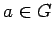

Inhalt Index DeskTop Bronstein

 Algebra und Diskrete Mathematik Klassische algebraische Strukturen Darstellung von Gruppen
Algebra und Diskrete Mathematik Klassische algebraische Strukturen Darstellung von Gruppen


Wenn der Darstellungsraum  einen gegenüber den Gruppenoperationen invarianten Unterraum (m <n) besitzt, dann können die Darstellungsmatrizen durch eine geeignete Basistransformation T in
einen gegenüber den Gruppenoperationen invarianten Unterraum (m <n) besitzt, dann können die Darstellungsmatrizen durch eine geeignete Basistransformation T in  auf die Form
auf die Form
gebracht werden. und sind selbst Matrixdarstellungen von  mit den Dimensionen m bzw. .
Existiert in  kein echter invarianter Unterraum, dann nennt man die Darstellung D(G) irreduzibel. Die Anzahl der inäquivalenten irreduziblen Darstellungen einer endlichen Gruppe ist endlich. Läßt sich eine Basistransformation T finden, die
kein echter invarianter Unterraum, dann nennt man die Darstellung D(G) irreduzibel. Die Anzahl der inäquivalenten irreduziblen Darstellungen einer endlichen Gruppe ist endlich. Läßt sich eine Basistransformation T finden, die  in eine direkte Summe von invarianten Teilräumen überführt, d.h.
in eine direkte Summe von invarianten Teilräumen überführt, d.h.
dann geht die Darstellungsmatrix für jedes  nach einer Ähnlichkeitstransformation mit
nach einer Ähnlichkeitstransformation mit  in Block-Diagonalform (
in Block-Diagonalform ( in (5.125)) über:
in (5.125)) über:
Eine solche Darstellung heißt vollständig reduzibel.
Hinweis: Bei naturwissenschaftlichen Anwendungen der Gruppentheorie besteht eine fundamentale Aufgabe darin, die Klassifizierung aller inäquivalenten irreduziblen Darstellungen einer gegebenen Gruppe zu finden.
| Beispiel |
|
Die in (5.117) angegebene Darstellung der symmetrischen Gruppe S3 ist reduzibel. Durch die Basistransformation erhält man z.B. für die Darstellungsmatrix der Permutation p3: |